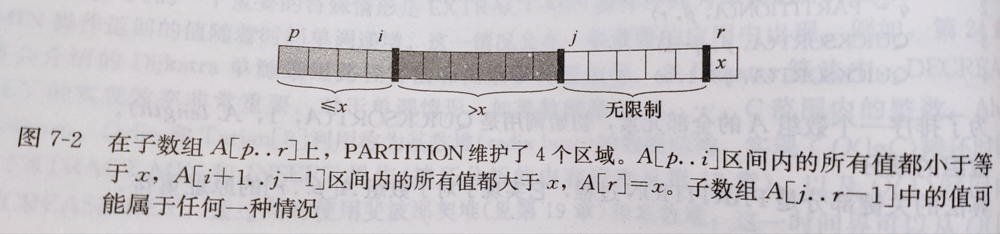
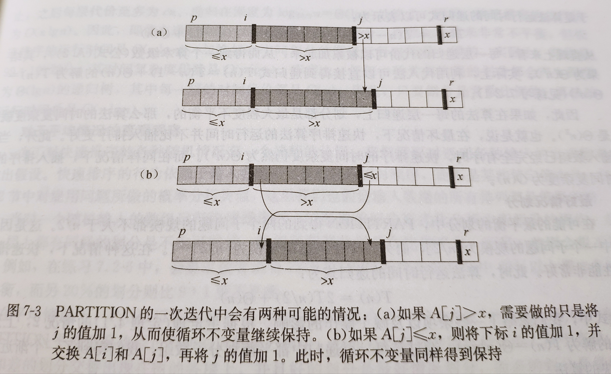

快速排序
这是一种常用且优秀的排序算法，与归并排序类似，它也是一种基于分治法的排序算法，但是它是原址排序，从使用来看平均性能是归并排序的4倍左右。
快速排序的描述
快速排序基于分治法思想，因此步骤也可以划分为基本的3步：
分解：数组A[p..r]被划分为两个(可能为空)子数组A[p..q-1]和A[q+1..r]，使得A[p..q-1]中的每个元素都小于等于A[q]，而A[q]也小于等于A[q+1..r]中的每个元素，其中计算下标q也是划分过程的一部分。
解决：通过递归调用快速排序，对子数组A[p..q-1]和A[q+1..r]进行排序
合并：因为子数组都是原址排序，所以不需要合并操作，数组A[p..r]已经有序。
1 | void qsort(int* array, int p, int r) { |
快速排序的主体很简单，调用partition()对数组进行划分，然后再递归的对数组进行快排。
1 | int partition(int* array, int p, int r) { |
快速排序的核心在于partition()这个函数，首先函数选取数组的末尾元素作为主元，然后从头到尾依次把元素和主元进行比较讲元素分为大于等于主元的和小于主元，最后将主元插入原数组中，即主元此时处于正确的位置。


快速排序的性能
快速排序的运行时间依赖于划分是否平衡，而平衡依赖于用于划分的元素(即主元)。
最差情况分析
当每次划分产生的子问题规模分别为n-1和0时，此时处于最差的情况，时间复杂度的递归表达式为： \[ \begin{aligned} T(n) &= T(n-1) + T(0) + \Theta(n) \\ &= T(n-1) + \Theta(1) + \Theta(n) \\ &= T(n-1) + \Theta(n) \\ &= \Theta(n^2) \end{aligned} \] 如果用递归树来表示，那么会是一颗极度不平衡的二叉树(无左子树或无右子树)。
最差情况发生在数组是顺序排列或逆序排列时，此时算法复杂度为\(O(n^2)\)。
最好情况分析
最好的情况即两个子树的规模相等，此时递归表达式为: \[ \begin{aligned} T(n) &= 2T(n/2) + \Theta(n) \\ &= \Theta(n\log n) \end{aligned} \] 最好情况下的递归表达式与归并排序是一样的，所以时间复杂度也为\(\Theta(n\log n)\)
常数比例系数划分
我们以划分后子问题的规模为1:9为例，其递归表达式为： \[ T(n) = T(\frac{1}{10}) + T(\frac{9}{10}) + \Theta(n) \]

从图中可以看出即便是1:9这样不平衡的划分，但是树的高度仍然是\(\Theta(\lg n)\)，因此时间复杂度仍为\(\Theta(n\lg n)\)。
事实上，任意一种常数比例的划分，时间复杂度都是\(\Theta(n\lg n)\)。
随机化快速排序
在讨论快速排序的平均情况时，我们的前提假设是，输入的所有排列都是等可能的。但是在实际的工程中，这个假设不是总成立的，所以我们可以在快速排序中引入随机性，来使得算法在任何输入下都有较好的表现。
我们可以采用在上一篇文章中采用的显式的对输入进行重新排列，但是在快速排序中我们可以采用一种称为随机抽样(random sampling)的技术，来使得分析变得更简单。随机抽样的关键在于随机选取主元，因为主元与划分有关，因此我们把A[r]与A[p..r]中任何一个元素进行交换。
首先需要产生一个随机数，在C语言中，用srand()和time()来产生随机种子，再用取余运算将其压缩到合适的区间。 1
2
3
4
5
6int random(int p, int r) {
int i;
srand((unsigned)time(NULL));
i = rand() % (r - p + 1) + p;
return i;
}
更改后的partition()函数： 1
2
3
4
5
6
7
8
9
10
11
12
13
14
15
16
17
18
19
20
21
22
23int partition(int* array, int p, int r) {
int i = p - 1;
int x = array[r]; // 主元
int temp, rand_num;
rand_num = random(p, r);
array[r] = array[rand_num]; // 随机化
array[rand_num] = x;
x = array[r];
for (int j = p; j < r; j++)
{
if (array[j] <= x) {
i++;
temp = array[j];
array[j] = array[i];
array[i] = temp;
}
}
array[r] = array[++i];
array[i] = x; // 重新插入主元
return i;
}
期望运行时间
快速排序的运行时间与在partition()上花费的时间有关，每调用一次partition()，至少有一个元素被排列到正确的位置，因此partition至多被调用n次。
调用一次partition()的时间为O(1)再加上一段循环时间，这段时间与partition()中的循环次数成正比，而每进行一次迭代都有一次比较，因此我们统计比较的次数，就能得到时间的上界。
引理:当在一个包含n个元素的数组上运行qsort()时，假设在partition()中所做的比较次数为\(X\)那么，qsort()的运行时间是\(O(n+X)\)。(此处的X为随机变量)
为了进行分析，我们首先将数组中的各元素按从小到大重命名为\(z_1,z_2,z_3,\dots,z_n\)，同时我们还定义\(Z_{ij}=\{z_i,z_{i+1},\dots,z_{j}\}\)，即\(Z_{ij}\)表示从\(z_i\)与\(z_J\)之间的所有元素(包含\(i\)和\(j\))，然后又要用到上一篇文章所提到的指示器随机变量，定义\(X_{ij}\)： \[ X_{ij} = I\{z_i \text{与} z_j \text{进行比较}\} \] 然后有： \[ X = \sum_{i=1}^{n-1} \sum_{j=i+1}^{n}X_{ij} \] 因为在一次调用中，元素至多被比较一次，所以\(i=1,j=2\)与\(i=2,j=1\)只进行了一次，因此变量\(j\)起始从\(i+1\)开始。 \[ \begin{aligned} E[X] &= E[\sum_{i=1}^{n-1} \sum_{j=i+1}^{n}X_{ij}] \\ &= \sum_{i=1}^{n-1} \sum_{j=i+1}^{n}E[X_{ij}] \\ &= \sum_{i=1}^{n-1} \sum_{j=i+1}^{n}Pr\{z_i与z_j进行比较\} \\ \end{aligned} \] \(z_i\)与\(z_j\)两种进行了比较，当且仅当两者其中一个被选为主元，而对于\(Z_{ij}\)中任何一个元素被选作主元的可能性都是一样的，因此有： \[ \begin{aligned} Pr\{z_i与z_j进行比较\} &= Pr\{z_i或z_j是集合Z_{ij}中选中的主元\} \\ &= Pr\{z_i是集合Z_{ij}中选中的主元\} +Pr\{z_j是集合Z_{ij}中选中的主元\} \\ &= \frac{1}{j-i+1} + \frac{1}{j-i+1} = \frac{2}{j-i+1} \end{aligned} \] 最终我们可以得到： \[ E[X] = \sum_{i=1}^{n-1} \sum_{j=i+1}^{n} \frac{2}{j-i+1} = \sum_{i=1}^{n-1}\sum_{k=1}^{n-i} \frac{2}{k+1} \lt \sum_{i=1}^{n-1}\sum_{k=1}^{n} \frac{2}{k} = \sum_{i=1}^{n-1}O(\log n) = O(n\log n) \] 计算累加和时，将变量做了一个变换(\(k=j-i\))，最后求和还会再次用到调和级数的界的性质。
最终，我们得到了结论，在元素相异的情况下，随机化快速排序的期望时间为\(O(n\log n)\)